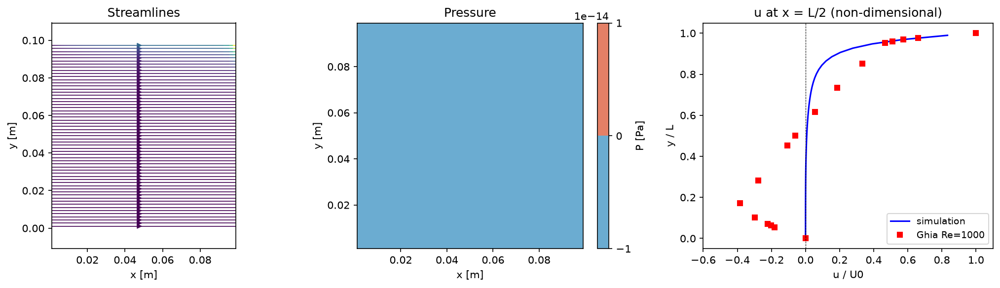
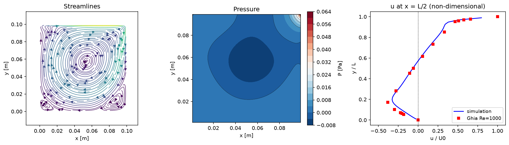
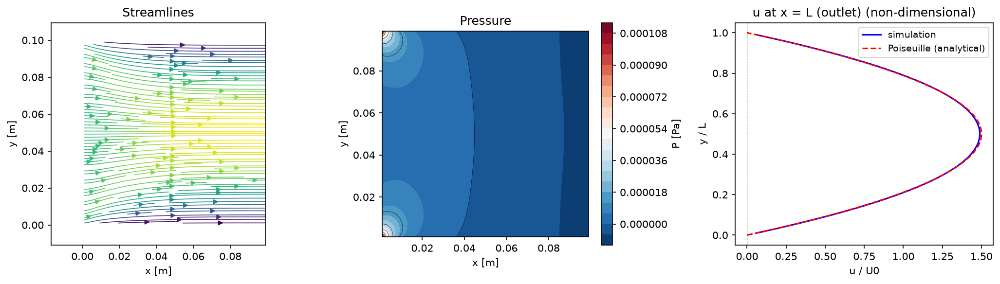

4. 圧力Poisson
ここまでは channel flow で進めてきたが、このステップでは題材を lid-driven cavity flow に書き換える。流入・流出のない閉じた箱なので、圧力による循環がないと蓋の運動が内部に伝わるだけで 特徴的な渦が生まれない——圧力Poissonの必要性を体感しやすい題材になっている。
支配方程式
運動量式に残る圧力項（下線部）と、まだ使っていない連続の式（非圧縮条件）を、このステップで扱う:
圧力項のx成分は 。移流・粘性で進めた仮の速度 は連続の式を満たさないので、圧力を解いて速度を補正し、非圧縮 （）にするのがこのステップ。
lid-driven cavity への書き換え
ここまで channel 用に作ってきたbc.f90とinitial.f90を cavity 用に書き換える。全体像は:
上蓋だけが速度U0で右へ動き、残る3辺は静止した壁。流入・流出はない。
lid-driven cavity: 上蓋だけが速度 U0 で動き、残る3辺は静止した壁。蓋のせん断が内部に渦を作る。
initial.f90は簡単になる。蓋の動きはbc.f90だけで表現されるので、初期条件は channel のような
凝った式は不要——流体が静止した状態（u=v=p=0）にするだけ。書き換えの本番はbc.f90で、
これがこのステップの境界条件のお勉強になる（channel と違い流入・流出がないので、質量保存の再スケーリングは要らない）。
cavity の initial.f90 の答えを見る
導入で書いたダブレットの2つのループごと消して、u=v=p=0 にするだけ。
使わなくなった変数（x, y, xc, yc, r0, r2）の宣言も消す（Reの表示はそのまま残してよい）:
subroutine initial_condition()
use config
use initial
implicit none
real(8) :: Re
Re = U0*min(Lx,Ly)/nu
write(*,'(a,i0,a,i0,a,es9.2,a,es9.2,a,f10.1)') &
'grid=', Nx, 'x', Ny, ' nu=', nu, ' m^2/s U0=', U0, ' m/s Re=', Re
u = 0.0d0
v = 0.0d0
p = 0.0d0
end subroutine initial_condition
境界条件をゴーストセルで与える
スタガード格子では、速度が必ずしも壁の上に載らない。たとえば下壁（y=0）に対して、uは壁から
半セルずれた位置にある（u(i,1)は壁の半セル内側、u(i,0)は半セル外側）。壁の上に値が無いので、
壁の外側にゴーストセルu(i,0)を1枚置き、
壁を挟んだ内側とゴーストの平均が壁での値になるように逆算する:
静止壁では壁での値が0なので、ゴーストは内側の符号を反転したものになる（）。
コードではu(i,0) = -u(i,1)（配列スライスでu(1:Nx-1,0) = -u(1:Nx-1,1)）。
静止壁のゴーストセル: 内側u(i,1)とゴーストu(i,0)を大きさ同じ・向き逆にすると、壁での平均がちょうど0になる。
動く蓋（上壁）だけは壁での値がU0なので、平均がU0になるようゴーストを取る
（）——コードではu(1:Nx-1,Ny+1) = 2*U0 - u(1:Nx-1,Ny)。
一方、壁の上にちょうど載る速度（下壁でのvなど）は、ゴーストではなく直接0を入れる
（no-penetration）。
演習: bc.f90（cavity）
上の考え方で四方の壁を埋める。uとvで「壁の上に載るか／半セルずれるか」が入れ替わる点に注意:
- 左右の壁:
uは壁の上に載る → 直接0（u(0,1:Ny)=u(Nx,1:Ny)=0） - 下壁（静止）・上壁（蓋）:
uは半セルずれる → ゴースト（符号反転／2*U0−内側） - 上下の壁:
vは壁の上に載る → 直接0（no-penetration） - 左右の壁:
vは半セルずれる → ゴーストで符号反転（v(0,0:Ny)=-v(1,0:Ny)など）
bc.f90（cavity）の答えを見る
! 左右の壁: u は壁の上に載るので直接0 u(0, 1:Ny) = 0.0d0 u(Nx, 1:Ny) = 0.0d0 ! 下壁（静止）と上壁（蓋 U0）: u は半セルずれるのでゴースト u(1:Nx-1, 0) = -u(1:Nx-1, 1) u(1:Nx-1, Ny+1) = 2.0d0*U0 - u(1:Nx-1, Ny) ! 上下の壁: v は壁の上に載るので直接0（no-penetration） v(1:Nx, 0) = 0.0d0 v(1:Nx, Ny) = 0.0d0 ! 左右の壁: v は半セルずれるのでゴーストで符号反転 v(0, 0:Ny) = -v(1, 0:Ny) v(Nx+1, 0:Ny) = -v(Nx, 0:Ny)
圧力の境界条件（Neumann）
圧力（射影ポテンシャル）にも境界条件が要る。壁を横切る流れが無い
（壁に垂直な速度が0）ということは、あとで出てくる速度補正 の壁に垂直な成分も0、
すなわち壁で圧力の法線方向勾配が0（、Neumann条件）を意味する。
コードではpoisson.f90のSORで、領域端の隣接値を内側に折り返して参照する
（pe = p(min(i+1,Nx),j)のように添字をmin/maxで頭打ちにする）ことで勾配ゼロを表している——ここはすでに書いてある。
実行して確認①: まず圧力なしで試す
書き換えたbc.f90・initial.f90で、poisson.f90がまだ空欄（＝圧力補正なし）のまま
cavity を回すとどうなるかを先に見ておく。
wrk/main.f90は前ステップのまま触らない （boundary_condition・advection・diffusionは有効、poissonはコメントのまま）。wrk/config.csvを cavity 用に切り替える（他はデフォルトのまま）:key 値 理由 casecavity後処理でGhia基準解を重ねる U00.01ν=1.0×10⁻⁶・L=0.1 で Re = U0·L/ν = 1000nstep30000定常になるまで回す nout3000途中経過も書き出す - ビルドして実行する（コマンドは1行ずつ）:
cd wrk make ./cfd.exe
- 結果を絵にする（リポジトリ直下に戻ってから）:
cd .. python post/plot.py wrk/config.csv

圧力補正なしの lid-driven cavity flow（Re=1000）。流線は蓋の下にできた薄いせん断層の中で 真横に流れるだけで、下向き・横向きの流れがまったく生まれていない。右パネルのGhia基準解（赤四角）が 示す特徴的なS字（上半分でプラス、下半分でマイナスの逆流）とはまるで違う形になっている。
これは移流・拡散だけでは非圧縮条件 （div u = 0）が保証されないため。蓋の下で押しのけられた流体が横や下に逃げる代わりに、 その場に溜まって不自然に圧縮・膨張してしまい、循環を生み出す圧力差が生まれない。
圧力（射影ポテンシャル）を解く意味
仮の速度 は移流項と粘性項を足しただけで、連続の式 を満たしていない。 最終的な には運動量の式と連続の式の両方を満たしてほしい。そこで を発散ゼロの場へ射影する。 Helmholtz–Hodge分解により、 仮の速度から勾配部分 を引けば、発散ゼロの速度が残る:
発散ゼロ（）を課すと、 は次の圧力Poisson方程式を満たす:
ここで は物理的な圧力そのものではない。速度を非圧縮に保つための 射影ポテンシャル（擬圧力）で、 物理圧力を近似する（Δt→0で一致）が、分数ステップの分離誤差（特に壁の近くで 程度）を このスカラーが引き受ける分だけ厳密な圧力とはずれる。この「圧力もどき」で毎ステップ速度を非圧縮に引き戻すのが、 Fractional Step法（射影法）[3]の肝である。
コードでは を配列 p で表し、1/ρはpに吸収させている。
全周Neumann境界では
は定数分だけ不定なので、毎ステップ平均をゼロに引いてある。
離散化と演習（poisson.f90）
1. 発散（Poissonの右辺 rhs_p）
セル(i,j)の発散は、隣り合う面の速度の差で作る（u(i,j)が ）。それをdtで割ったものが右辺:
答えを見る
rhs_p(i,j) = ((u(i,j)-u(i-1,j))/dx + (v(i,j)-v(i,j-1))/dy) / dt
2. SOR（Gauss-Seidel＋緩和係数）
Poisson方程式はSORで反復的に解く。これは Gauss-Seidel法 に緩和係数 ω（1〜2）を掛けて収束を速めただけの手法。まず各格子点で Gauss-Seidel の新値を作り:
（）。次に、旧値からの変化量を ω 倍して適用する（ω=1なら Gauss-Seidel そのもの、1<ω<2で加速）:
答えを見る
p_new = (pe/dx**2 + pw/dx**2 + pn/dy**2 + ps/dy**2 - rhs_p(i,j)) / coef p_new = omega*p_new + (1.0d0 - omega)*p(i,j)
境界条件（Neumann、平均をゼロに固定）と、隣接値pe,pw,pn,ps・coefはすでに書いてある。埋めるのはこの2行だけ。
3. 速度補正
求めた の勾配を仮の速度から引くと、発散ゼロの になる:
答えを見る
u(i,j) = u(i,j) - dt*(p(i+1,j) - p(i,j))/dx v(i,j) = v(i,j) - dt*(p(i,j+1) - p(i,j))/dy
実行して確認②: 圧力を入れて Ghia 基準解と比較する
lid-driven cavity flow の定番の検証には、Ghia ら[1] の数値解が使われる。これは非常に細かい格子＋マルチグリッド法で解いたもので、中心線上の離散点データ （Re=100, 400, 1000, ...）がCFDコードの比較用ベンチマークとして広く用いられている。
- 上の演習の3か所（
rhs_p・SOR更新・速度補正）をpoisson.f90に埋める。 wrk/main.f90の最後の1行の行頭の!を消す:! call poisson(u, v, p) ! 4. 圧力Poissonのステップで解除これで分数ステップの呼び出し列（移流 → 粘性 → 圧力）がすべて有効になる。wrk/config.csvは①と同じ（case=cavity, U0=0.01, nstep=30000）。- ビルドして実行し、絵にする:
cd wrk make ./cfd.exe cd .. python post/plot.py wrk/config.csv
まずnstep=3000程度で渦ができ始めるのを確かめてから、3万ステップまで回すと定常になる。 - 結果を確認する。今度は蓋の下で押しのけられた流体が壁沿いに循環して渦ができ、 右パネルの中心線の速度分布が Ghia 基準解（赤四角）に重なれば完成。
実行結果を見る

Re=1000, 48×48格子。圧力を解くことで蓋の下に押しのけられた流体が壁沿いに循環し、 Ghia基準解（赤四角）とよく一致する渦が再現されている。左下・右下には小さな二次渦もうっすら見える。
bc.f90・
initial.f90を作ってきたので、余裕があれば元に戻して同じpoissonで
確認してみるとよい。config.csvをcase=channel, U0=1.0×10⁻⁴（この低いU0の
理由は5. 移流項の改良で扱う）に戻し、発達まで回せば（nstepは粘性項ステップと同じく30万程度）、
出口の速度分布が plane Poiseuille flow の解析解とほぼ完全に一致する。
実行結果を見る

Re=10, 48×48格子。発散はmax|div|≈5.4×10⁻⁷まで収束し、plane Poiseuille flow の解析解とほぼ完全に一致する。
bc.f90・initial.f90・poisson.f90・main.f90 をステージ → Commit → Push）。